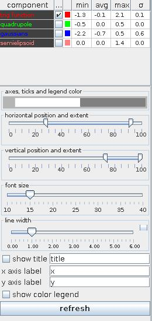

GRAPH 1D OBJECT
The graph 1D object module creates a graph geometry object of all 1D scalars of the input field.
Input data
The input field is a regular 1D field.
Output data
The output is a geometry object for 3D rendered volume.
Presentation parameters

The components table provides information about all scalar components of the input field like minimum, maximum, average value and deviation.
Check boxes allow to switch on and off the graphical presentation of the components. Left mouse click at the color buttons raises a color panel from which the user can chose a new color by a next mouse click.
Axes, ticks and legend color is selected by mouse clicking on the color box and choosing a color by a next mouse click from the color panel. Color intensity is chosen by mouse dragging in the box in horizontal direction.
Position and size of the graph can be adjusted using the horizontal position and extent slider and the vertical position and extent slider. Parameters are given in percent of the graphics window extents.
The font size slider changes the size of labeling fonts, i.e. title, axes names, numbers and variable names displayed in the graph.
The line width slider selects the line width of the graphs and the axes. If check box on the right hand side is on the user can change minimum, maximum and current value typing the values into text fields.
If show title box is on the title from the text field right hand side of the box is displayed in the graphics window.
X axis label and y axis label text fields allow to change the axes names.
If show color legend box is switched on function names are displayed.
The refresh button refreshes all adjustments.